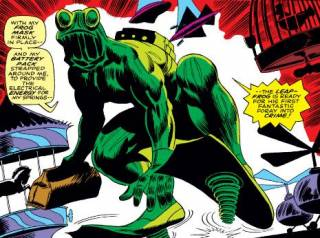
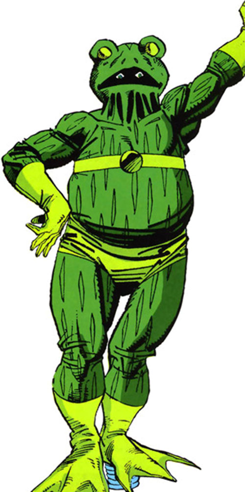

Weird Supervillains/Supheroes
Leap-Frog & Frog Man
By Chase Osborn - 2/2/2024
First Appearance: Daredevil #25 (1967) (Leap-Frog)
First Appearance: Marvel Team-Up #121 (1982) (Frog Man)
Brief History
A former toy inventer, Vincent Patilio set out to make some money by embarking on a criminal career after he created a pair of electrically-powered jumping coils and wore a big green frog suit.
He was soon met by numerous humiliating defeats, first by Daredevil, and later by Iron Man and Spider-Man. In fact, his bad luck proved quite early in his career: after his first defeat by Daredevil, while on trial, Vincent tricked the court into giving him his shoes and jumped out of the window which was three stories high. However, he didn't know that the fasteners were removed and broke a leg as a result, just as Stilt-Man was coming to break him free. Patiilio's leg later healed, only for him to meet defeat alongside Electro's Emissaries Of Evil. When he was later released from prison, his wife, Rose, succumbed to cancer. It had been her paycheck that supported the house hold, which included their son, Eugene.
Eugene sought to clear his father's name by donning his Leap-Frog suit, and calling himself, Frog Man. As Frog Man, he helped Spider-Man and the Human Torch defeat the Speed Demon. Vinnie didn't want his son risking his life for money, so he decided to stop this by going undercover for the police to get a confession from the White Rabbit. He offered her his services and got a recorded confession from the White Rabbit about stolen loot. After White Rabbit was defeated by Frog Man and Spider-Man, Vinnie and his son have been living off the reward money from the recorded confession ever since.
Powers & Abilities
Leap-Frog's suit gave Vincent enhanced strength and agility, allowing him to jump several stories high. Other than that, he was a skilled inventor.
Other Media

Frog-Man makes a non-speaking cameo appearance in the Fantastic Four: World's Greatest Heroes episode "The Cure" as a failed applicant to the Fantastic Four after the Thing is "cured" of his condition.
Eugene Patilio appears in the She-Hulk: Attorney at Law episode "Ribbit and Rip It",portrayed by Brandon Stanley. This version goes by his father, Vincent Patilio's, codename of Leap-Frog and wears a suit developed by superhero suit tailor Luke Jacobson.